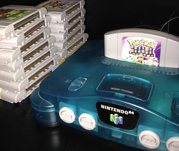
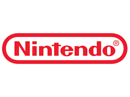
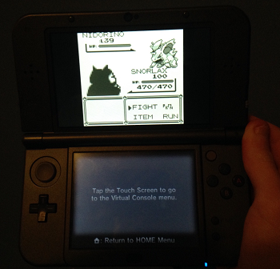

I have been playing video games my entire life, and it all started with my Gameboy Color and Nintendo 64. Since then, video games have been my main hobby. As I grew up, I continued to get the new systems as they came out. To this day, I still have most of my old games I played as I grew up.
Unlike the majority of gamers these days, I don’t really enjoy first person shooters like Call of Duty. Instead, I like to play other games, such as platformers, strategy games, and puzzle games. I don’t play Xbox or PlayStation very often. I prefer to play Nintendo games.
I play new and old games, ranging from the ancient NES and Atari games to the Wii U. I believe that good graphics do not instantly make a game good. Therefore, I enjoy the older games as well as the newer games. The older consoles contain some of my favorite games.
Although there are games out there that I really like and games that I don’t like, I don’t have a favorite video game. I think that every game is different, and it’s just not possible to compare any two games. I either like or dislike a game. No matter how much I try to find out what my favorite is, I end up having a whole list of my favorites rather than just one specific game.
By Drew B